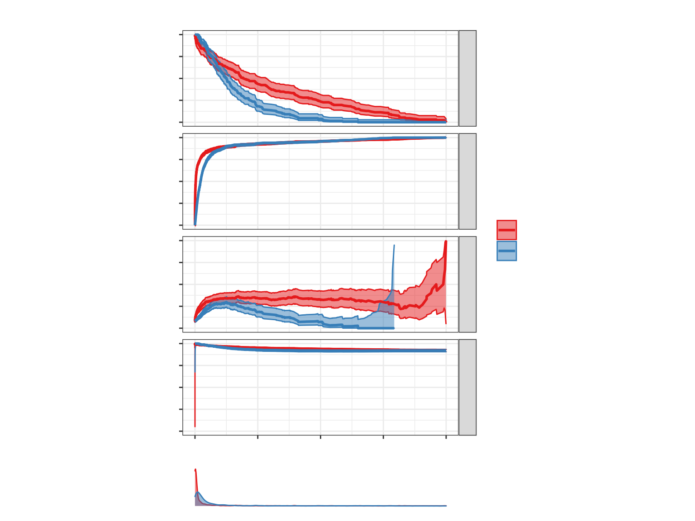
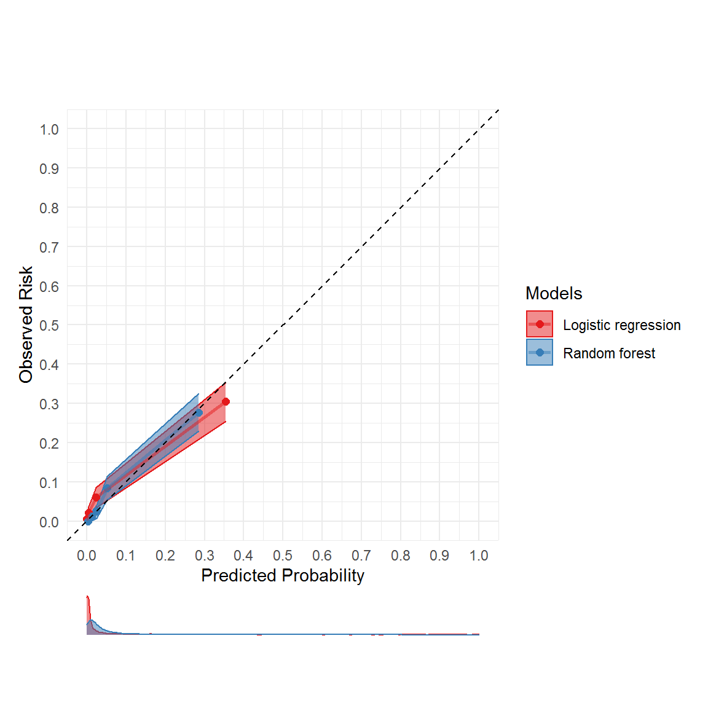

vignettes/using_embeddings_for_machine_learning_on_clinical_text.Rmd
using_embeddings_for_machine_learning_on_clinical_text.Rmd
library(tidyverse)
library(tidymodels)
#> Warning: package 'tidymodels' was built under R version 3.6.3
#> -- Attaching packages ----------------------------------------------------------------------------------------- tidymodels 0.1.1 --
#> v broom 0.7.0 v recipes 0.1.13
#> v dials 0.0.9 v rsample 0.0.8
#> v infer 0.5.3 v tune 0.1.1
#> v modeldata 0.0.2 v workflows 0.2.0
#> v parsnip 0.1.3 v yardstick 0.0.7
#> Warning: package 'broom' was built under R version 3.6.3
#> Warning: package 'dials' was built under R version 3.6.3
#> Warning: package 'scales' was built under R version 3.6.3
#> Warning: package 'infer' was built under R version 3.6.3
#> Warning: package 'modeldata' was built under R version 3.6.3
#> Warning: package 'parsnip' was built under R version 3.6.3
#> Warning: package 'recipes' was built under R version 3.6.3
#> Warning: package 'rsample' was built under R version 3.6.3
#> Warning: package 'tune' was built under R version 3.6.3
#> Warning: package 'workflows' was built under R version 3.6.3
#> Warning: package 'yardstick' was built under R version 3.6.3
#> -- Conflicts -------------------------------------------------------------------------------------------- tidymodels_conflicts() --
#> x scales::discard() masks purrr::discard()
#> x dplyr::filter() masks stats::filter()
#> x recipes::fixed() masks stringr::fixed()
#> x dplyr::lag() masks stats::lag()
#> x yardstick::spec() masks readr::spec()
#> x recipes::step() masks stats::step()
library(clinspacy)
#> Welcome to clinspacy.
#> By default, this package will install and use miniconda and create a "clinspacy" conda environment.
#> If you want to override this behavior, use clinspacy_init(miniconda = FALSE) and specify an alternative environment using reticulate::use_python() or reticulate::use_conda().
library(runway)
mtsamples = dataset_mtsamples()Here, we are aiming to predict which of the descriptions refer to ‘Cardiovascular / Pulmonary’ notes so we will convert the outcome into a binary outcome. We will remove all of the predictor variables other than
mtsamples_embeddings =
mtsamples %>%
clinspacy(df_col = 'description',
return_scispacy_embeddings = TRUE,
verbose = FALSE) %>%
bind_clinspacy_embeddings(mtsamples) %>%
mutate(is_cardiology_note =
if_else(medical_specialty == 'Cardiovascular / Pulmonary',
'Yes',
'No')) %>%
select(contains('emb_'), is_cardiology_note) %>%
na.omit()
set.seed(1)
logreg_workflow = workflow() %>%
add_model(logistic_reg() %>% set_engine('glm')) %>%
add_recipe((recipe(is_cardiology_note~., data = mtsamples_embeddings)))
logreg_result =
fit_resamples(logreg_workflow,
resamples = validation_split(data = mtsamples_embeddings, prop = 2/3),
metrics = metric_set(roc_auc, pr_auc),
control = control_resamples(save_pred = TRUE))
logreg_result %>% collect_metrics()
#> # A tibble: 2 x 5
#> .metric .estimator mean n std_err
#> <chr> <chr> <dbl> <int> <dbl>
#> 1 pr_auc binary 0.986 1 NA
#> 2 roc_auc binary 0.870 1 NA
set.seed(1)
rf_workflow = workflow() %>%
add_model(rand_forest(mode = 'classification', trees = 1000) %>%
set_engine('ranger')) %>%
add_recipe((recipe(is_cardiology_note~., data = mtsamples_embeddings)))
rf_result =
fit_resamples(rf_workflow,
resamples = validation_split(data = mtsamples_embeddings, prop = 2/3),
metrics = metric_set(roc_auc, pr_auc),
control = control_resamples(save_pred = TRUE))
rf_result %>% collect_metrics()
#> # A tibble: 2 x 5
#> .metric .estimator mean n std_err
#> <chr> <chr> <dbl> <int> <dbl>
#> 1 pr_auc binary 0.984 1 NA
#> 2 roc_auc binary 0.837 1 NA
combined_predictions =
bind_rows(
logreg_result %>% collect_predictions() %>% mutate(model_name = 'Logistic regression'),
rf_result %>% collect_predictions() %>% mutate(model_name = 'Random forest')
)
combined_predictions %>%
mutate(is_cardiology_note = if_else(is_cardiology_note == 'Yes', 1, 0)) %>%
threshperf_plot_multi(outcome = 'is_cardiology_note',
prediction = '.pred_Yes',
model = 'model_name')
#> Warning: No fonts detected on your system. Using an empty font.
#> Failed to get face: , 517223040
#> Failed to get face: , 517223040
#> Failed to get face: , 517223040
#> Failed to get face: , 517223040
#> Failed to get face: , 517223040
#> Failed to get face: , 517223040
#> Failed to get face: , 517223040
#> Failed to get face: , 517223040
#> Failed to get face: , 517223040
#> Failed to get face: , 517223040
#> Failed to get face: , 517223040
#> Failed to get face: , 517223040
#> Failed to get face: , 517223040
#> Failed to get face: , 517223040
#> Failed to get face: , 517223040
#> Failed to get face: , 517223040
#> Failed to get face: , 517223040
#> Failed to get face: , 517223040
#> Failed to get face: , 517223040
#> Failed to get face: , 517223040
#> Failed to get face: , 517223040
#> Failed to get face: , 517223040
combined_predictions %>%
mutate(is_cardiology_note = if_else(is_cardiology_note == 'Yes', 1, 0)) %>%
cal_plot_multi(outcome = 'is_cardiology_note',
prediction = '.pred_Yes',
model = 'model_name',
n_bins = 5)
#> Failed to get face: , 517223040
#> Failed to get face: , 517223040
#> Failed to get face: , 517223040
#> Failed to get face: , 517223040
#> Failed to get face: , 517223040
#> Failed to get face: , 517223040
#> Failed to get face: , 517223040
#> Failed to get face: , 517223040
#> Failed to get face: , 517223040
#> Failed to get face: , 517223040
#> Failed to get face: , 517223040
#> Failed to get face: , 517223040
#> Failed to get face: , 517223040